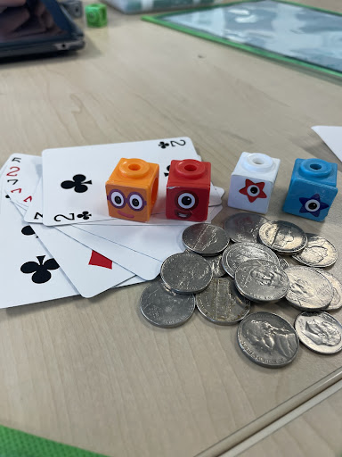
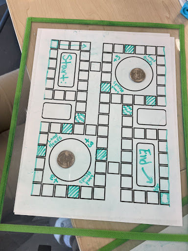
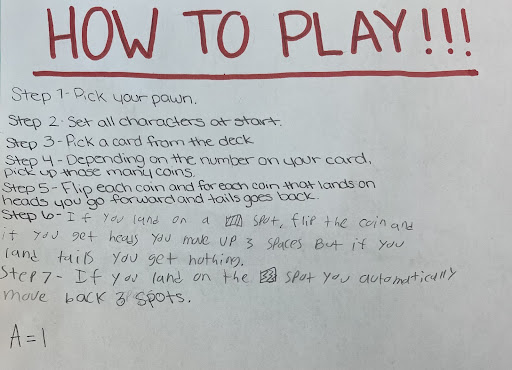

During this assignment we created a game with our group and then tested it out with another group. In our game fbi agents were trying to bring their monster back home and report their secrets to HQ. Players would flip coins, get power ups and find shortcuts. Players also had to be careful of obstacles that could send you back spaces.
  On this assignment we learned how to use python to create two 2D games. The first one was really simple, we made a character and then had him move across your screen, then when you click him he makes a sound. The second game we made was more complicated. The game was called Coin Collector. We coded the game so that the player could use arrow keys to move a fox around their screen collecting coins and I added a code that made a sound every time a coin was collected.